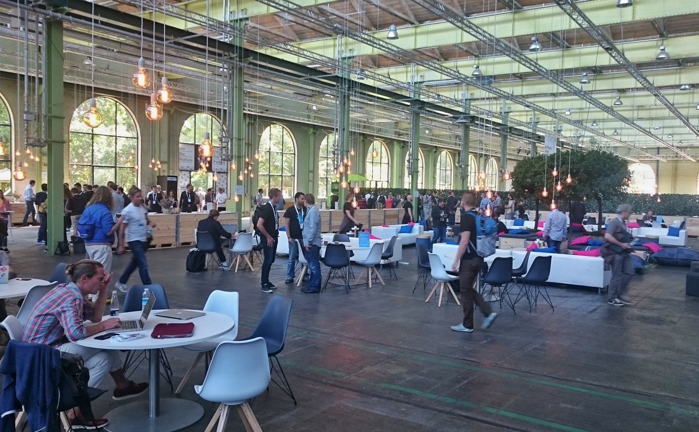
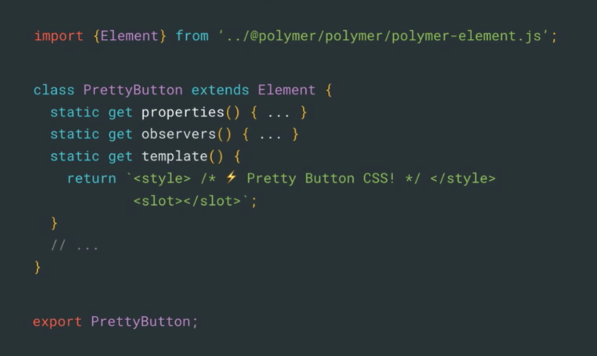
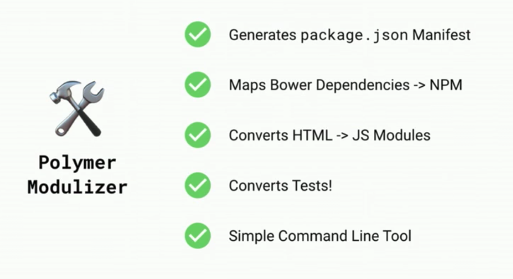
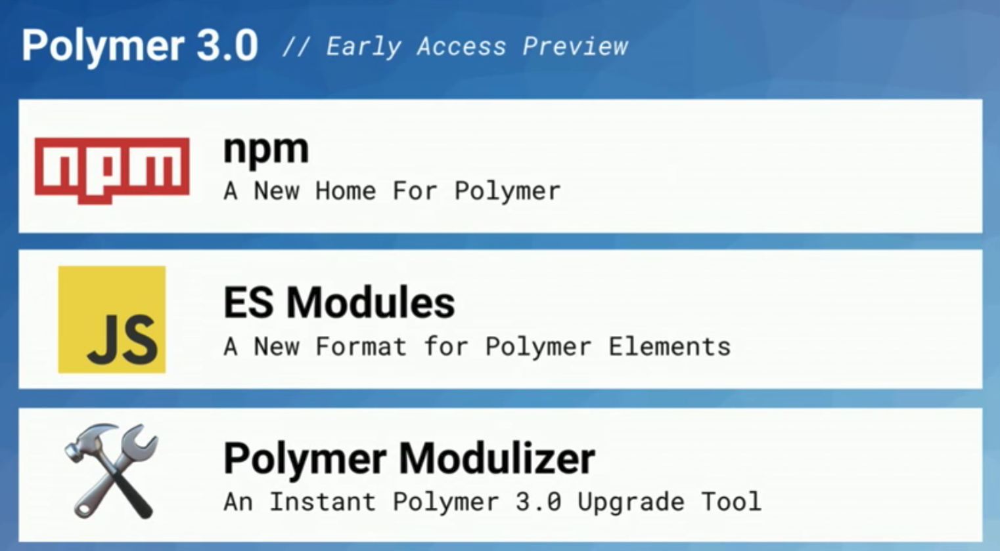
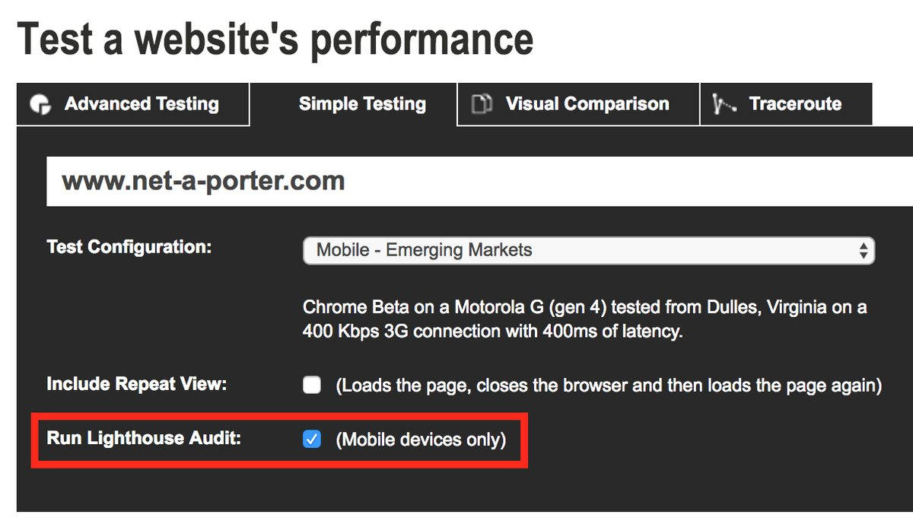

polymer summit 2017 highlights
🇩🇰 💰 💂🏻 🚤

what's new in polymer?
polymer is now at version
✨ 3.0 (beta) ✨
polymer is on NPM 💪
(no more bower)
JavaScript es imports ✅
HTML imports 💔🗑

thanks react
🤙
old v2.0 components?
polymer modulizer ⚒
upgrades older components to 3.0

official elements have been ported to NPM 😋

yarn: flatten depency tree
( for front end modules )
// package.json { "flat": true }
yarnpkg.com/lang/en/docs/package-json/
google updated youtube with polymer components
1.5 billion users per month
1+ billion hours watched per day
( 114,000 years )
< 2s to load a video
✨new youtube preview✨
youtube.com/new
+ performance
+ new dark theme 🌚
mobile performance testing
run lighthouse audits
on real mobile devices 📲

webpagetest.org/easy.php
custom elements
does your element need shadown dom?
✅ for controls and stuff
✅ if you want to apply self-applied styles
✅ dom encapsulation
how easy is it?
🤔
other things:
codelabs
build and deploy a polymer 2.0 app
prpl with custom elements and firebase
performant expand & collapse animations
supercharged
custom components
intersection observer
image rendering in css
✨ lazy loading w/super awesome progressivly rendered base64 images 🎉
lastly
bluetooth beacons!
set your phone up now 🤳
✅ chrome installed
✅ data connection
✅ bluetooth switched on
setup on ios
setup on android
broadcasting all the links now!
but if you prefer QRcode or a tinyURL
thanks!
😘